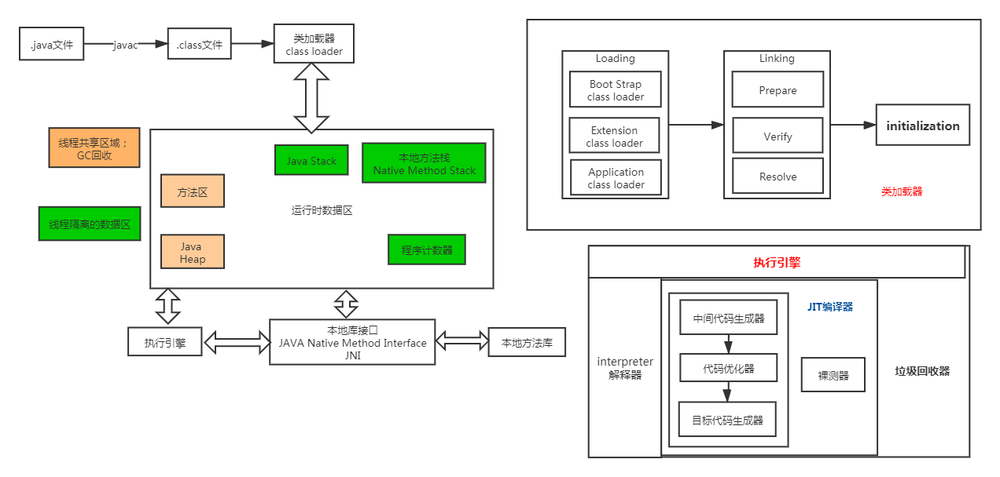
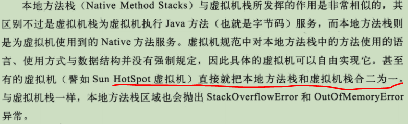

Java Virtual Machine
JVM是Java技术用以实现与硬件、操作系统无关的关键部分，其与Java语言没有必然联系，只与特定的二进制文件格式——class文件格式相关联。class文件包含了Java虚拟机指令集(即字节码)和符号表，以及一些辅助信息；凡是能用class文件正确表达的编程语言，都可以在Java虚拟机中执行。
数据类型
JVM可以操作两种数据类型:原始类型和引用类型。
- 原始类型
包括数值类型(整数类型和浮点类型)、boolean类型(JVM没有提供 供boolean值专用的字节码指令，在编译后，使用JVM中的int类型来代替)、returnAddress类型(会被JVM的jsr、ret、jsr_w指令所使用，returnAddress类型的值指向一条虚拟机指令的操作码，在java语言中并不存在对应的类型，也无法在程序运行期间修改)。 -
引用类型
-
运行时数据区域

类加载器: 将类加载到内存中，分为3步: 加载、链接、初始化。
loading:
加载指的是将类的class文件读入到内存，并为之创建一个java.lang.Class对象; 类的加载由类加载器完成，类加载器通常由JVM提供;
此外开发者可以通过继承ClassLoader基类来创建自己的类加载器。
通过使用不同的类加载器，可以从不同来源加载类的二进制数据，通常有如下几种来源：
从本地文件系统加载class文件；
从JAR包加载class文件，如JDBC编程时用到的数据库驱动类就放在JAR文件中；
通过网络加载class文件；
把一个Java源文件动态编译，并执行加载.
类加载器通常无须等到“首次使用”该类时才加载该类，Java虚拟机规范允许系统预先加载某些类.
一旦一个类被加载如JVM中，同一个类就不会被再次载入了。正如一个对象有一个唯一的标识一样，一个载入JVM的类也有一个唯一的标识。
在Java中，一个类用其全限定类名（包括包名和类名）作为标识；但在JVM中，一个类用其 全限定类名和其类加载器 作为其唯一标识.
VM预定义有三种类加载器，当一个 JVM启动的时候，Java开始使用如下三种类加载器：
1)根类加载器（bootstrap class loader）:用来加载 Java 的核心类（负责加载$JAVA_HOME中jre/lib/rt.jar里所有的class，
由C++实现，不是ClassLoader子类）。由于引导类加载器涉及到虚拟机本地实现细节，开发者无法直接获取到启动类加载器的引用，
所以不允许直接通过引用进行操作。
2)扩展类加载器（extensions class loader）：它负责加载JRE的扩展目录，lib/ext或者由java.ext.dirs系统属性指定的目录中的JAR包的类。
由Java语言实现，父类加载器为 bootstrap class loader, 但由于后者是C++实现，不能直接被java语法引用，所以打印结果为null。
3)系统类加载器（system class loader）：被称为系统（也称为应用）类加载器(Applcation Classloader)，
它负责在JVM启动时加载来自Java命令的-classpath选项、java.class.path系统属性，或者CLASSPATH变量所指定的JAR包和类路径。
程序可以通过ClassLoader的静态方法getSystemClassLoader()来获取系统类加载器。如果没有特别指定，
则用户自定义的类加载器都以此类加载器作为父加载器。由Java语言实现，父类加载器为ExtClassLoader。
类加载机制:
全盘负责：所谓全盘负责，就是当一个类加载器负责加载某个Class时，该Class所依赖和引用其他Class也将由该类加载器负责载入，
除非显示使用另外一个类加载器来载入。
双亲委派：所谓的双亲委派，则是先让父类加载器试图加载该Class，只有在父类加载器无法加载该类时才尝试从自己的类路径中加载该类。
通俗的讲，就是某个特定的类加载器在接到加载类的请求时，首先将加载任务委托给父加载器，依次递归，如果父加载器可以完成类加载任务，
就成功返回；只有父加载器无法完成此加载任务时，才自己去加载。
缓存机制: 缓存机制将会保证所有加载过的Class都会被缓存，当程序中需要使用某个Class时，类加载器先从缓存区中搜寻该Class，
只有当缓存区中不存在该Class对象时，系统才会读取该类对应的二进制数据，并将其转换成Class对象，存入缓冲区中。
这就是为什么修改了Class后，必须重新启动JVM，程序所做的修改才会生效的原因。
双亲委派机制的优势：
1、Java类随着它的类加载器一起具备了一种带有优先级的层次关系，通过这种层级关可以避免类的重复加载，当父亲已经加载了该类时，
子ClassLoader无需重复加载。
2、考虑到安全因素，java核心api中定义类型不会被随意替换，假设试图加载自定义的java.lang.Integer的类(完全限定名和核心类中一致)，
通过双亲委托模式传递到启动类加载器，而根类加载器在核心Java API发现这个名字的类，发现该类已被加载，
则不会重新加载请求的java.lang.Integer,而是直接返回已加载过的Integer.class，这样便可以防止核心API库被随意篡改。

Linking:
当类被加载之后，系统为之生成一个对应的Class对象，接着将会进入连接阶段，连接阶段负责把类的二进制数据合并到JRE中。
类连接又可分为如下3个阶段:
1)验证：验证阶段用于检验被加载的类是否有正确的内部结构，并和其他类协调一致。Java是相对C++语言是安全的语言，
例如它有C++不具有的数组越界的检查。验证的目的在于确保Class文件的字节流中包含信息符合当前虚拟机要求，不会危害虚拟机自身安全。
其主要包括四种验证:
文件格式验证:主要验证字节流是否符合Class文件格式规范,并且能被当前的虚拟机加载处理。例如主、次版本号是否在当前虚拟机处理的范围之内,
常量池中是否有不被支持的常量类型; 指向常量的中的索引值是否包含不存在的常量或不符合类型的常量。
元数据验证：对字节码描述的信息进行语义的分析，分析是否符合java的语言语法的规范。
字节码验证：最重要的验证环节，分析数据流和控制，确定语义是合法的，符合逻辑的。主要的针对元数据验证后对方法体的验证。
保证类方法在运行时不会有危害出现。
符号引用验证：主要是针对符号引用转换为直接引用的时候，是会延伸到第三解析阶段，主要是确定访问类型等涉及到引用的情况，
要保证引用一定会被访问到，不会出现类等无法访问的问题。
2)准备：类准备阶段负责为类的静态变量分配内存，并设置默认初始值。
3)解析：将类的二进制数据中的符号引用替换成直接引用。
符号引用：符号引用是以一组符号来描述所引用的目标,符号可以是任何字面形式的字面量，只要不会出现冲突能够定位到就行。布局和内存无关。
直接引用：是指向目标的指针，偏移量或者能够直接定位的句柄。该引用是和内存中的布局有关的，并且一定加载进来的。
initializing:
初始化是为类的静态变量赋予正确的初始值.
程序计数器/PC寄存器: 不同的线程的PC是独立的，存放当前线程正在执行的方法的字节码指令地址；但如果该方法是native的，则pc的值是undefined(即PC寄存器为空)。
Java虚拟机栈: 生命周期与线程相同，用于存储栈帧，因为除了stack frame的入栈和出栈外，JVM stack不再受其它因素影响，所以栈帧可以在堆中分配，JVM stack使用的内存也不需要保证是连续的；JVM stack中可能出现两种异常: 线程请求分配的栈容量大于JVM stack容许的最大容量，抛出StackOverflowError；
若JVM stack允许动态扩展容量，当扩展时无法申请到足够的内存，将抛出OutOfMemoryError.
Java堆:供各个线程共享的运行时内存区域，也是可供所有类实例和数组对象分配内存的区域；在JVM启动时被创建，存储了所有被GC管理的各种对象；Java堆可以处于物理上不连续的内存空间中，只需要逻辑上连续即可；运行动态扩展，且可以自动收缩无用的空间，当实际所需的堆大小超出最大容量时，抛出OutOfMemory.
方法区: 同样属于线程的共享区域，存储了每一个类的结构信息，包括运行时常量池、字段和方法数据、构造函数和普通方法的字节码内容，以及一些在类、实例、接口初始化时用到的特殊方法；在实现上，没有规定如何实现，由不同的虚拟机厂家自己觉得；逻辑上是堆的一部分，但为了与java heap区分开，也称为Non-heap(非堆)，同样不需要物理连续的内存，允许扩展，但可以选择不实现垃圾收集；当内存空间不满足内存分配请求时，抛出OutOfMemory异常。
运行时常量池:
本地方法栈:

-
内存分代
JVM根据对象在内存中存活时间的长短，把堆内存分为新生代（包括一个Eden区、两个Survivor区）和老年代（Tenured或Old）。 给堆内存分代是为了提高对象内存分配和垃圾回收的效率，避免频繁回收内存时，需要遍历所有的对象;
永久代: 是HotSpot jvm特有概念，是方法区的一种实现；但从JKD1.8开始，已经采用MetaSpace代替永久代，永久代中的class-metadata转移到本地内存中，运行时常量池转移到java heap中.
内存分配担保: 在真正触发Minor GC之前，JVM会先去老年代中检查最大可用的连续内存空间是否大于新生代中的所有对象总空间，如果这个条件成立，那么这一次的Minor GC是安全的，因为如果没有任何对象需要回收，且老年代有足够的空间(JVM会取之前每一次回收晋升到老年代对象的容量的平均大小值作为一个参考，与目前老年代中的剩余空间进行比较，以此来确认本次内存分配担保是否可以成功)，则新生代中多余的对象会晋升到老年代；否则的话，则会进行一次major/full GC,让老年代腾出更多空间。
JVM提供HandlePromotionFailure参数，为true时，则会先冒险进行minor GC, 如果失败再进行分配担保，这样在一定程度可以避免担保的开销。 关于major GC和full GC, 概念上通常比较混乱，full GC有资料称其是针对整个堆进行回收，包括young和old，甚至方法区。 -
栈帧
存储数据和部分过程结果，同时用来处理动态链接、方法返回值、异常分派；随着方法调用而创建，随着方法结束而销毁； stack frame的内存空间由创建它的线程分配在java stack中，每一个stack frame都有自己的本地变量表、操作数栈、指向当前方法所属的类的运行时常量池的引用。 局部变量表 类似C++中，通过获取类的存储地址，通过指针访问计算对齐后变量存放地址相对存储地址的偏移，获取到变量值。
动态链接 -
对象访问
垃圾回收
程序计数器、虚拟机栈、本地方法栈生命周期与线程一致；栈中的栈帧分配的内存大小在类结构确定时基本固定，因此这几个区域内存的分配和回收都具备确定性。而java heap和方法区中，由于一个接口的不同实现类需要的内存不一样，一个方法的不同分支需要的内存也不一样，这部分内存的分配和回收是动态的，GC关注的也是这部分内存。
对象引用
-
根搜索算法
java中使用 GC Root Tracing 算法判断对象是否存活，而非 引用计数法。通过一系列名为GC Roots的对象作为起始点，从这些节点开始向下搜索，搜索走过的路径称为引用链(reference chain), 当一个对象到 GC Roots没有任何引用链相连时，则证明此对象是不可用的，即被判定为可回收的对象。 -
引用类型
-
引用的存活
-
回收方法区
方法区(HotSpot虚拟机中称为永久代)的垃圾回收包括两部分: 废弃常量(如常量池中不再被任何对象引用的字面量, 常量池中的其他类/接口、方法、字段的符号引用与此类似)、无用的类(需要满足三个条件:
垃圾收集算法
- 标记-清除算法
首先标记出所有需要回收的对象，在标记完成后统一回收掉所有被标记的对象；主要缺点为:
1、效率问题，标记和清除的效率都不高;
2、空间问题，标记清除之后会产生大量不连续的内存碎片，导致分配较大对象时无法找到足够的连续内存而触发另一次垃圾回收动作。 - 复制算法
- 标记-整理算法
首先标记出所有需要回收的对象，然后让所有存活的对象向一端移动，最后直接清理掉端边界以外的内存，可以避免标记-清除可能产生的内存碎片。 - 分代收集算法
基于内存分代，针对不同区域采用不同的收集算法，例如新生代选用复制算法；老年代采用标记-清除或者标记-整理算法。